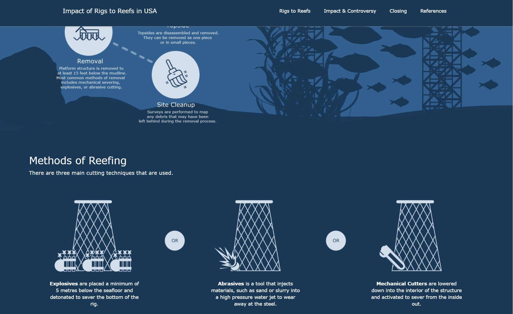

Impact of Rigs to Reefs in USA
information design final project.
spring 2019.
For SIAT’s second-year information design class, I researched and designed a digital solution to address the lack of an unbiased centralized source of information on rig to reefs (RTR). With my teammate, we created a website (Figures 1 & 2) that educates laypeople about artificial reefs in a visually digestible manner. The scope of this project was quite large, so I’ll only explain my process in designing the website.
drafting
While researching RTR, I was inspired by the images depicting the liveliness and depth of biotic reefs created from oil rigs as seen in Figure 3. I desired to recreate the same impression with our site so I began sketching layouts on Photoshop with this idea in mind. After considering the visual appeal, user habits, readability, and interactivity, my design (Figures 4 & 5) was chosen to be the framework of our website.
prototyping
I created our first prototype using HTML and CSS with placeholder images and texts as seen in Figure 6. However, I quickly ran into issues provoked by the layout’s concept. The illustration of the infinitely long oil platform legs forced all the textual information to be compressed on one side of the page, causing the experience to feel repetitive and stagnant. It was also difficult to balance playfulness and professionalism in the design. The overabundance in colour and lighthearted interactions seemed ill-fitting for a controversial topic like RTR.
 Figure 6: Kong, K (Spring 2019). Impact of Rigs to Reefs in USA website first working prototype [Screenshot].
Figure 6: Kong, K (Spring 2019). Impact of Rigs to Reefs in USA website first working prototype [Screenshot].
final iteration
To avoid making the same mistakes, I sketched and wireframed (Figure 7 & 8) the entire site before recreating it using HTML and CSS. Provided with the proper images and texts created for this project, I was able to reiterate the design of our site to provide a more cohesive tone. By limiting the colour palette, it effectively balanced out the playful animations and interactions. To address the repetitiveness, I limited the length of the oil platform legs and used different grid column guides throughout the page.
Overall, our project was well received. Our work resulted in an A+ and the site was collected to be used as a student example. Given the one month we had with this project, I am also satisfied with our final results.
 Figure 9: Kong, K (Spring 2019). Impact of Rigs to Reefs in USA website [Screenshot].